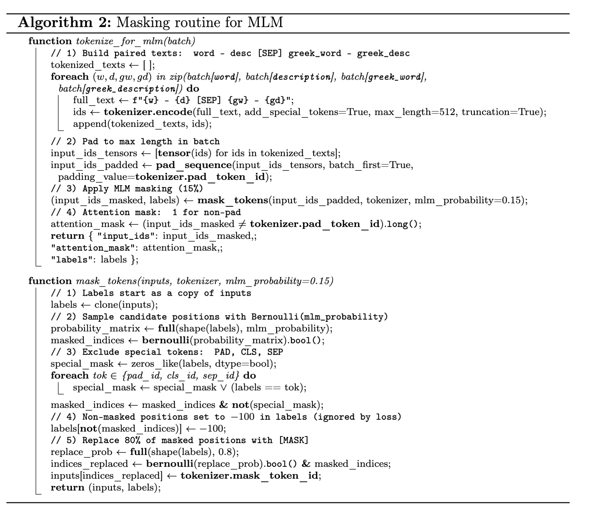
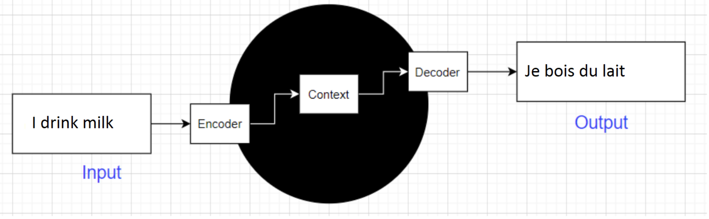
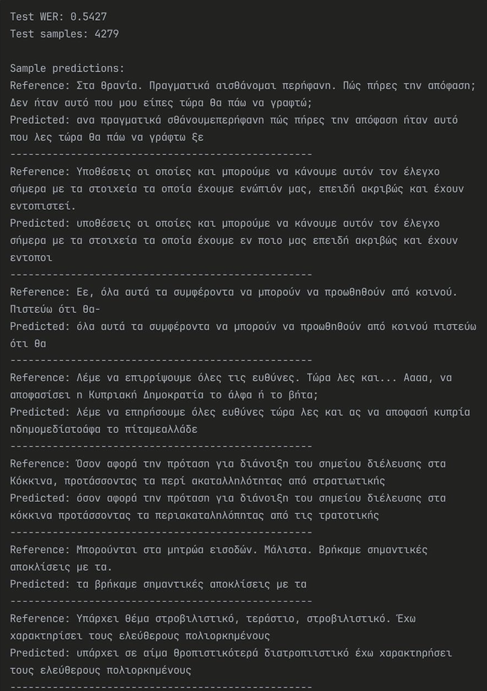
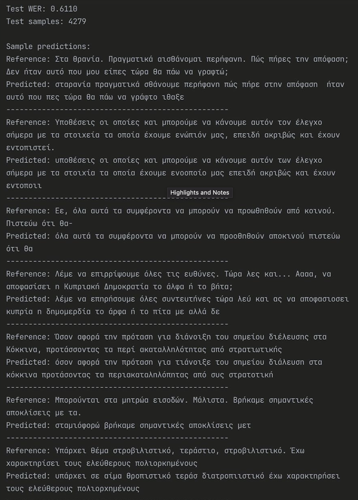
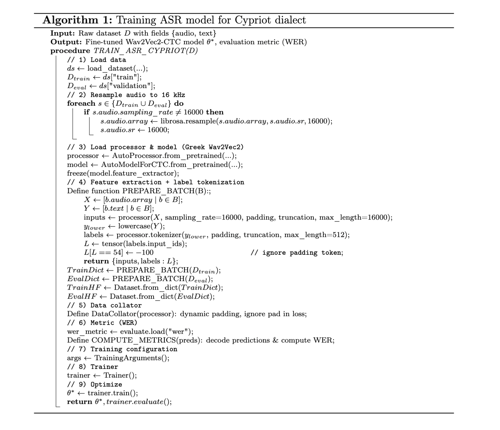

Intro
In this post, I’ll try to walk you through — in as much detail as possible — the product we built as a team in our startup, Abasis AI.
Special thanks goes to RIF, who gave us the opportunity to join their program and gain unforgettable experience.
Platform link: Voice of Cyprus
Model link: Representation
Our team was small but focused:
— Nikita Markov (me) — responsible for building the ASR model,
— Hussein Khadra — responsible for the platform,
— Igor Akimov — the originator of the idea.
So, what was this project actually about? Oh boy, there’s A LOT to tell. The general idea was to create a Cypriot audio platform — basically a system built on chunks of recorded Cypriot Greek dialect. Users could visit the website and voluntarily help us transcribe this data. Why? Because as I mentioned in the title, we were pioneers: there were no ASR models or datasets available for Cypriot dialects. Our goal was to empower the community and crowdsource dataset creation. This was crucial, because our biggest problem was simple: there were no clean, usable datasets to train an ASR model. With the support of people, we wanted to create them ourselves. When it came to the ASR model itself, the initial idea was to create a commercial system for the parliament, capable of listening to Cypriot Greek and producing transcripts in real time. There was also a second commercial plan: a Cypriot voice-based auto-responder for restaurants. The vision was that customers could order food at home — without speaking to a human. (Yes, the introvert’s dream!)
The project was short but intense. We had:
— 6 weeks total,
— roughly 40 working days,
— and on my side of the table, about 190 hours of hands-on work.
The Learning Curve
When I first started this internship, I had no idea what ASR systems were or how they worked. The only background I carried with me was some experience in NLP. In the first weeks, I didn’t even know what WER or CER meant — yet by the end of the final week, I was presenting a fully trained ASR model built on data I had cleaned and sorted, enhanced with KenLM for language modeling, and producing results comparable to ElevenLabs — but free. Along the way, before even discovering KenLM, I managed to build a masked language model trained on a Cypriot dictionary. Intrigued? Let me give you a quick summary of the journey before diving into a detailed breakdown later.
Yes, I studied all the basics, dug through metrics like WER and CER, built dictionaries, cleaned gigabytes of audio, and fine-tuned different ASR models — but I won’t burden you with every detail of that learning curve. Instead, let’s skip the boring parts and jump straight into what really matters: the architecture we ended up building.
Before I could deliver the results I was aiming for, I broke the ASR model three separate times, each time convinced that “this is it, it’s finally going to work.” In parallel, while experimenting with MLM, I trained a BERT model — starting with the bright idea of choosing a multilingual version instead of a language-specific one (because, hey, if it knows many languages, it must be better, right?). Later I even tried to train the MLM model to talk with me, not to predict sentenses — oh God, forgive me for that mistake. The lesson? Trust the process, and don’t be afraid to break things and make mistakes along the way.
MLM
A masked language model is trained to predict missing words in a sentence. During training, some tokens are hidden (replaced with a special mask symbol), and the model learns to infer them using the surrounding context on both sides. Imagine giving a friend a sentence with blanks, like a fill-in-the-blank puzzle in a magazine. They look at the words before and after the blank to figure out the missing piece.
It all began in the very first week. We were, frankly speaking, sitting there with nothing to work with, wondering: how do we even start this process? The first thought was obvious — we need a dataset. But where could we get one? At that early stage, none of us really knew how things were supposed to be done, so we decided to take the simplest route: we bought a Cypriot dialect dictionary from a library and photocopied it. After cleaning and normalizing this data, we finally had our very first piece of Cypriot material! But then came the real question: what do we actually do with it?
That’s when we stumbled upon an interesting idea from Amazon’s research paper RescoreBERT: Discriminative Speech Recognition Rescoring with BERT. The paper described a filter built using a pre-trained MLM (Masked Language Model), which could help rescore and filter the outputs of ASR systems. Since the responsibility of building models was entirely on me, I decided to dive into this rabbit hole. In the end, I actually managed to produce a reasonably functional MLM model — which is now publicly available for anyone.
To be honest, this wasn’t something strictly necessary for the project, more of a personal initiative. After all, it would be a shame to waste a 30,000-pair Cypriot dictionary. But progress was slow: by the end of week three I had something working, though half of my available time was already gone. In the end, we had to make a sober decision and drop the idea of merging these two approaches — we simply weren’t at that level yet.
You can probably imagine our reaction when I later stumbled, completely by accident, upon KenLM — a simple but powerful n-gram based tool, exactly what we had been searching for. I spent four days studying and implementing it, and soon the entire Cypriot dialect was converted into matrices and fed into the ASR system. (Spoiler: adding KenLM into the architecture gave us a measurable boost, reducing WER by 7%. That alone made me more than happy!)
ASR architecture
At the very beginning, during the first week, I was given a simple but essential task: to “find the vector,” so to speak. In practice, this meant testing different ASR models in a dry run to see how well they handled the Greek dialect out of the box. This is where MLflow turned out to be a lifesaver — by attaching tracking and swapping models with each run, I could keep everything consistent and comparable.
The evaluation was done using jiwer metrics, focusing on WER and CER. The lineup included models from major companies: ElevenLabs, Whisper, Wav2Vec2 (in several architectures [to be described later]), Deepgram, AssemblyAI, Speechmatics, OpenAI, and Google (Gemini).
From the very beginning, our favorite was Scribe by ElevenLabs, and we stuck with it until we had a working ASR of our own. Among the free models available on Hugging Face, we focused primarily on Whisper and Wav2Vec2. Their architectural differences are worth explaining in detail [section coming later], but already at this stage we could see their relative strengths and weaknesses.
Final Approach: Wav2Vec2 VS Whisper
The reason we ultimately chose wav2vec2 over whisper is because of how these two systems handle incoming audio chunks:

A seq2seq model is a type of neural network architecture designed to transform one sequence into another. It consists of an encoder, which reads and compresses the input sequence into a hidden representation, and a decoder, which unfolds this representation into the output sequence.
Imagine you’re at the UN, and someone says “Bonjour le monde” in French. A seq2seq model listens to the whole sentence (encoder), digests its meaning, and then retells it in English as “Hello world” (decoder).
CTC is a training and decoding method used in speech recognition and sequence modeling when the input length (e.g., audio frames) and output length (e.g., text) don’t match. Instead of forcing a strict alignment, CTC allows the model to predict at each time step either a symbol (like a letter) or a special “blank” token, and then collapses repeats and blanks to form the final sequence.
Imagine someone slowly says the word “cat” as “c… aaa… tttt”.
After collapsing blanks and duplicates, CTC produces: “cat”.
Our initial idea was to build a model for the needs of a restaurant, communicating with people in real time, so we couldn’t afford to wait while Whisper took its time to transcribe speech and respond (it would have turned into a very funny scene).
Also, during trials and testing of different models and architectures, we found out that Whisper is simply a giant when it comes to eating up RAM — we just couldn’t afford to use it.
Yes, Wav2Vec2 requires more tuning, but it’s cheap to run (Whisper’s 30 seconds input — memory just explodes; we didn’t get a chance to try lazy loading, so I can’t say for sure).
Links to the used material:
https://huggingface.co/datasets/Elormiden/RIK_Cypriot_News_Dataset
https://huggingface.co/datasets/Elormiden/RIK_Cypriot_Collection_Dataset
https://huggingface.co/datasets/Elormiden/Thesaurus-Cypriot-Greek-Dialect
KenLM Enhancement
KenLM is a fast and memory-efficient toolkit for building and querying n-gram language models.
It is widely used in speech recognition to rescore hypotheses during beam search, guiding the system toward more likely word sequences.
Typically, models up to 3–5 grams are used to balance accuracy with computational cost.
Detailed description of the tool: https://kheafield.com/code/kenlm/
It worked as follows: 30,000 pairs of Cypriot dialect from a scanned book, plus 17,000 pairs from the collection dataset and 42,000 pairs from the news dataset — these were used for fine-tuning the ASR model. So why not also include them in the .klm? This produced a huge amount of text, and the maximum possible number of n-grams was used (6 if i'm not mistaken).
Examples of the model with/without KenLM:


